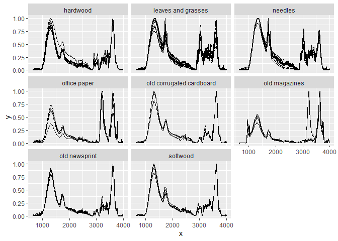

Overview
‘ir’ is an R package to import, handle and preprocess infrared spectra. Infrared spectra are stored as list columns in data frames which enables efficient storage of metadata along with the spectra and using ‘tidyverse’ functions for data operations.
Spectra in the following formats can be imported:
-
csvfiles with individual spectra. - Thermo Galactic’s
spcfiles with individual spectra.
Functions for spectral preprocessing and data handling:
- baseline correction with:
- a polynomial baseline
- a convex hull baseline
- a Savitzky-Golay baseline (Lasch 2012)
- binning
- clipping
- interpolating (resampling, linearly)
- replacing selected parts of a spectrum by a straight line
- averaging spectra within specified groups
- normalizing spectra:
- to the maximum intensity
- to the intensity at a specific x value
- so that all intensity values sum to 1
- vector normalization
- Standard Normal Variate correction
- smoothing:
- Savitzky-Golay smoothing
- Fourier smoothing
- computing derivatives of spectra using Savitzky-Golay smoothing
- spectral arithmetic (addition, subtraction, multiplication, division)
- computing the variance of intensity values (optionally after subtracting reference spectra)
- computing maxima, minima, median, and ranges of intensity values of spectra
- Atmospheric background correction (Perez-Guaita et al. 2013)
- Scaling intensity values in spectra
- Wrapper to sampling algorithms implemented in the ‘prospectr’ package.
- plotting
- tidyverse methods
How to install
You can install ‘ir’ from CRAN:
install.packages("ir")You can install the development version of ‘ir’ from GitHub:
remotes::install_github(repo = "henningte/ir", ref = "dev")How to use
Load ‘ir’:
For brief introductions, see below and the two vignettes:
Sample workflow
Here is an example preprocessing pipeline for the sample data in the package (ir_sample_data) which does baseline correction, binning (bin width of 10), normalization (so that the maximum intensity value is 1 and the minimum intensity value is 0), and finally plots the preprocessed spectra for each sample and sample type:
ir_sample_data |> # data
ir::ir_bc(method = "rubberband") |> # baseline correction
ir::ir_bin(width = 10) |> # binning
ir::ir_normalize(method = "zeroone") |> # normalization
plot() + ggplot2::facet_wrap(~ sample_type) # plot
Data structure
You can load the sample data with:
ir::ir_sample_data
#> # A tibble: 58 × 7
#> id_measurement id_sample sample_type sample_comment klason_lignin
#> <int> <chr> <chr> <chr> <units>
#> 1 1 GN 11-389 needles Abies Firma Momi fir 0.359944
#> 2 2 GN 11-400 needles Cupressocyparis leylandii… 0.339405
#> 3 3 GN 11-407 needles Juniperus chinensis Chine… 0.267552
#> 4 4 GN 11-411 needles Metasequoia glyptostroboi… 0.350016
#> 5 5 GN 11-416 needles Pinus strobus Torulosa 0.331100
#> 6 6 GN 11-419 needles Pseudolarix amabili Golde… 0.279360
#> 7 7 GN 11-422 needles Sequoia sempervirens Cali… 0.329672
#> 8 8 GN 11-423 needles Taxodium distichum Cascad… 0.356950
#> 9 9 GN 11-428 needles Thuja occidentalis Easter… 0.369360
#> 10 10 GN 11-434 needles Tsuga caroliniana Carolin… 0.289050
#> # ℹ 48 more rows
#> # ℹ 2 more variables: holocellulose <units>, spectra <named list>ir_sample_data is an object of class ir. An Object of class ir is a data frame where each row represents one infrared measurement and column spectra contains the infrared spectra (one per row) as list column. This allows to store metadata along each spectrum (for example the N content for each sample) and to manipulate ir objects with ‘tidyverse’ functions.
The column spectra is a list column of data frames, meaning that each cell of spectra contains a data frame which contains the data for one spectrum. For example, here are the first rows of the first spectrum in ir_smaple_data:
# View the first ten rows of the first spectrum in ir_sample_data
head(ir_sample_data$spectra[[1]])
#> # A tibble: 6 × 2
#> x y
#> <int> <dbl>
#> 1 4000 0.000361
#> 2 3999 0.000431
#> 3 3998 0.000501
#> 4 3997 0.000571
#> 5 3996 0.000667
#> 6 3995 0.000704Column x contains values for the spectral channel (in this case wavenumbers [cm-1]) and column y the corresponding intensity values.
How to cite
Please cite this R package as:
Henning Teickner (2025). ir: Functions to Handle and Preprocess Infrared Spectra. DOI: 10.5281/zenodo.5747169. Accessed 06 Apr 2025. Online at https://zenodo.org/record/5747169.
Companion packages
The irpeat package provides functions to analyze infrared spectra of peat (humification indices, prediction models) and uses the ‘ir’ package to handle spectral data.
Licenses
Text and figures : CC BY 4.0
Code : See the DESCRIPTION file
Data : CC BY 4.0 attribution requested in reuse. See the sources section for data sources and how to give credit to the original author(s) and the source.
Contributions
We welcome contributions from everyone. Before you get started, please see our contributor guidelines. Please note that this project is released with a Contributor Code of Conduct. By participating in this project you agree to abide by its terms.
Sources
ir_sample_data is derived from Hodgkins et al. (2018) and was reformatted to match the requirements of ‘ir’. The original article containing the data can be downloaded from https://www.nature.com/articles/s41467-018-06050-2 and is distributed under the Creative Commons Attribution 4.0 International License (https://creativecommons.org/licenses/by/4.0/). The data on Klason lignin and holocellulose content are originally from De la Cruz, Osborne, and Barlaz (2016).